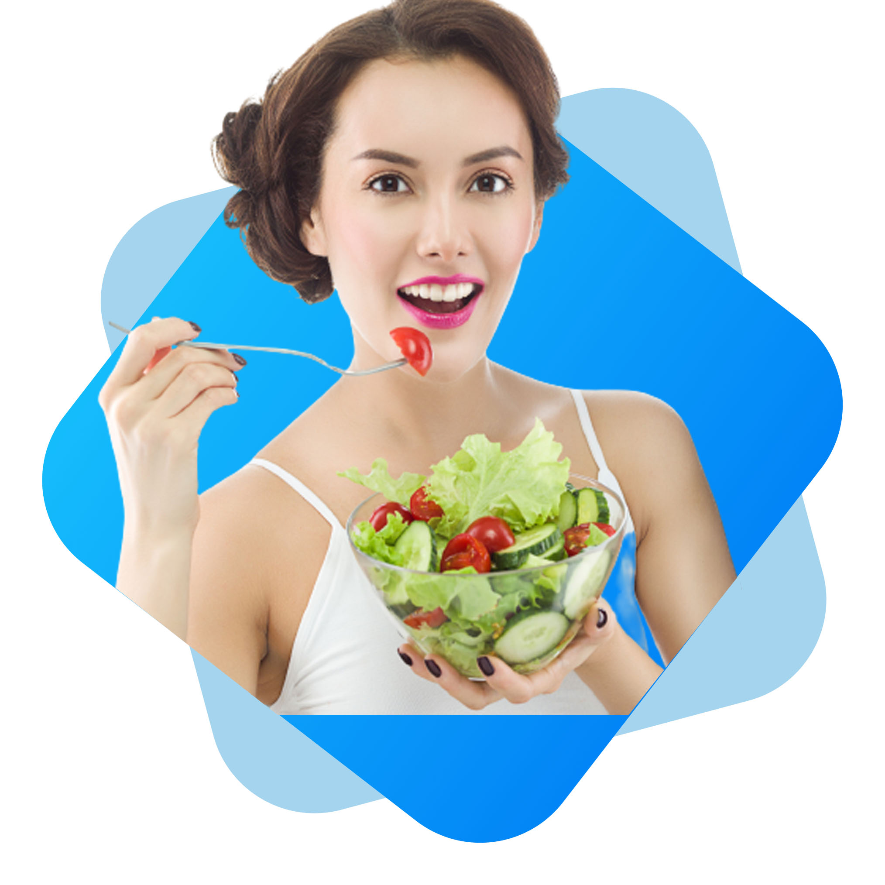

FOOD NETWORK
Skip The Diet,
Eat Healthy
With Food Network
How it would feel to you if you don't need to follow any diet? Yes, you heard it right. We provide healthy & delicious food for you. Order, eat and be healthy with us. We are waiting to serve you anytime.
ORDER FOOD
